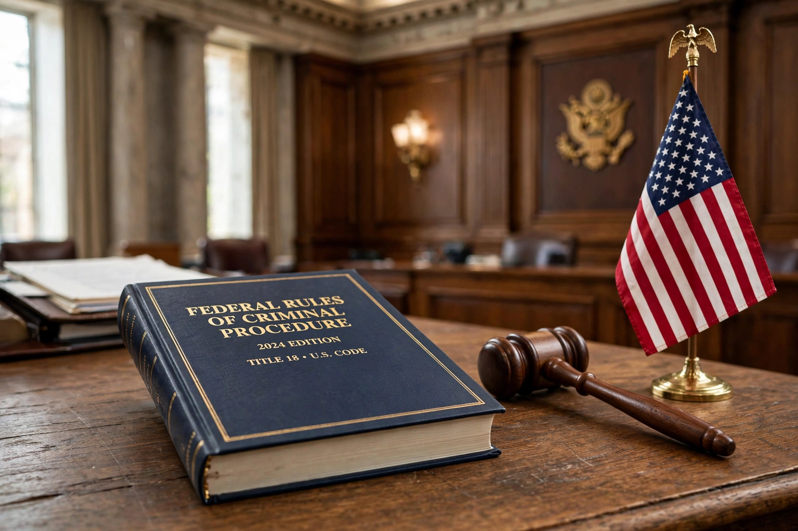

This article is about the rules governing federal criminal cases in the United States. For the civil counterpart, see Federal Rules of Civil Procedure.

| Jurisdiction | United States federal courts |
|---|---|
| Promulgated by | Supreme Court of the United States |
| Authority | Rules Enabling Act, 28 U.S.C. §§ 2071–2077 |
| Effective | March 21, 1946 |
| Number of rules | 61 rules, plus forms and an appendix |
| Administered by | Judicial Conference Advisory Committee on Criminal Rules |
The Federal Rules of Criminal Procedure are the procedural rules that govern how criminal proceedings are conducted in United States district courts and, to a lesser extent, in other federal courts. Together with the Federal Rules of Civil Procedure, the Federal Rules of Evidence, and the Federal Rules of Appellate Procedure, they form the core of federal practice in the United States.
The rules were promulgated by the Supreme Court under the authority of the Rules Enabling Act, reported to Congress, and took effect on March 21, 1946. They replaced a patchwork of statutes, local rules, and common-law practices with a single uniform code of procedure that follows a criminal case from the first appearance of the accused through trial, sentencing, and appeal.
Before 1940, federal criminal procedure was governed by an assortment of statutory provisions, some dating to the Judiciary Act of 1789, supplemented by the conforming practices of the states. Congress authorized comprehensive rulemaking in 1940, and the Supreme Court appointed an advisory committee chaired by Arthur T. Vanderbilt. After several drafts and public comment, the Court promulgated the rules on December 26, 1944; they became effective March 21, 1946, after being reported to Congress as required by statute.
Unlike the Federal Rules of Civil Procedure, which were the subject of restyling in 2007, the criminal rules were restyled effective December 1, 2002, reorganizing and clarifying their language without intended substantive change. Technical and substantive amendments continue to be made through the Judicial Conference's committee process, generally taking effect on December 1 of each year unless Congress acts.
The rules are organized into nine titles that track the chronological progress of a prosecution:
| Title | Subject | Selected rules |
|---|---|---|
| I | Applicability | Rule 1 (scope), Rule 2 (interpretation) |
| II | Preliminary proceedings | Rule 3 (complaint), Rule 4 (arrest warrant), Rule 5 (initial appearance), Rule 5.1 (preliminary hearing) |
| III | The indictment and the information | Rule 6 (grand jury), Rule 7 (indictment), Rule 9 (warrant on indictment) |
| IV | Arraignment and preparation for trial | Rule 10 (arraignment), Rule 11 (pleas), Rule 12 (defenses and motions), Rule 16 (discovery), Rule 17 (subpoena) |
| V | Venue | Rules 18–22 |
| VI | Trial | Rule 23 (jury or nonjury trial), Rule 24 (trial jurors), Rule 26 (testimony), Rule 29 (motion for judgment of acquittal), Rule 30 (jury instructions), Rule 31 (verdict) |
| VII | Post-conviction procedures | Rule 32 (sentencing), Rule 33 (new trial), Rule 34 (arresting judgment), Rule 35 (correcting sentence) |
| VIII | Supplementary and special proceedings | Rule 41 (search and seizure), Rule 42 (criminal contempt) |
| IX | General provisions | Rule 43 (defendant's presence), Rule 45 (computing time), Rule 48 (dismissal), Rule 49 (service and filing), Rule 54–61 (general provisions) |
Rule 6 governs the summoning, composition (16 to 23 members), and secrecy of the federal grand jury. Twelve or more jurors must concur to return an indictment. Proceedings are recorded but kept secret, subject to enumerated exceptions, and the rule was amended in the electronic age to address disclosure and recording practices.
Rule 11 regulates guilty pleas and nolo contendere pleas. Before accepting a guilty plea, the court must personally address the defendant in open court, determine that the plea is voluntary, and ensure that there is a factual basis for it. The rule also governs plea agreements, including the non-binding and binding types of agreements a court may accept or reject.
Rule 16 establishes reciprocal, though asymmetrical, discovery obligations. The government must disclose, among other things, the defendant's statements, the defendant's prior record, documents and objects within its control that are material to preparing the defense, reports of examinations and tests, and expert witness summaries. The defense must reciprocate in defined categories once it has requested and received discovery. The broader constitutional disclosure duties of Brady v. Maryland operate independently of the rule.
Rule 41 governs the application for, issuance of, and execution of federal search warrants, including warrants for electronically stored information and tracking devices. Amendments effective in 2016 clarified venue for warrants to search remote computers whose locations have been concealed through technological means, a change that attracted significant public debate.
Amendments originate in the Advisory Committee on Criminal Rules of the Judicial Conference of the United States, are published for public comment, reviewed by the Standing Committee on Rules of Practice and Procedure, approved by the Judicial Conference and the Supreme Court, and transmitted to Congress by May 1; they ordinarily take effect on December 1 unless Congress enacts contrary legislation.